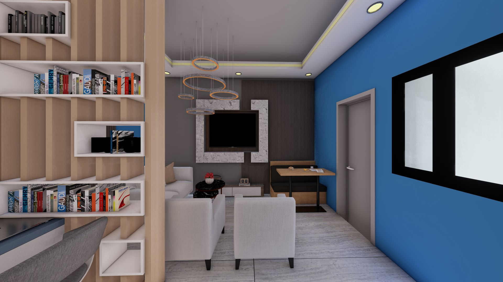
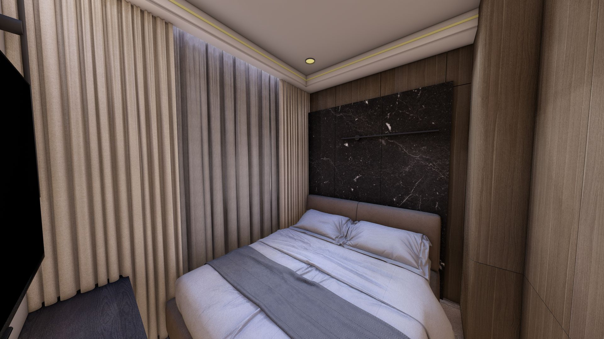

Optimisation et Design Contemporain
Le Studio Graphite est une exploration de l'habitat compact haut de gamme. Ce projet vise à transformer des surfaces restreintes en espaces de vie luxueux et hautement fonctionnels, en utilisant une palette de matériaux sobres et une gestion rigoureuse des volumes.
Entièrement conçu sous environnement BIM (Revit), le projet intègre des solutions de mobilier sur mesure (LIT, TELE) pour maximiser chaque mètre carré. L'esthétique repose sur un contraste entre des textures naturelles et des lignes architecturales épurées, offrant un sanctuaire urbain calme et ordonné.
Typologie
Studio Résidentiel
Logiciels
Revit / SketchUp / Lumion
Expertise
BIM Management & Interior Design

